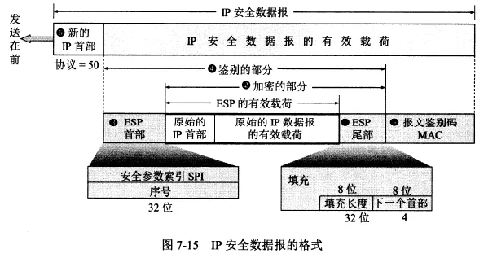
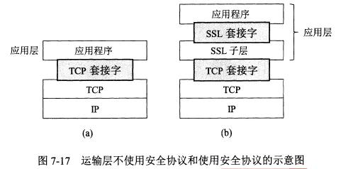
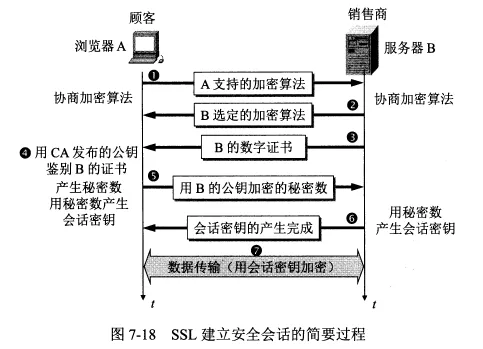

网络安全
- TAGS: Network
网络安全问题概述
计算机网络面临的安全性威胁
计算机网络上的通信面临的威胁可以分为两大类：被动攻击（如截获）和主动攻击（如中断、篡改、伪造）。
安全的计算机网络
安全的计算机网络应该达到：保密性、端点鉴别、信息的完整性、运行的安全性。
数据加密模型
密码学包括密码编码学（设计密码体制）和密码分析学（破解密码）。
无条件安全的密码几乎不存在，大部分密码都是计算上安全的，即在一定时间内是不可破解的。
两类密码体制
对称密钥密码体制
对称密钥密码体制中加密密钥与解密密钥是相同的。这种加密的保密性仅取决于对密钥的保密，算法是公开的。
数据加密标准 DES 是一种对称密钥密码体制。初版的 DES 已经不安全，目前采用的是三重 DES（3DES）。三重 DES 广泛用于网络、金融、信用卡等系统。
公钥密码体制
公钥密码体制中加密密钥是公开的（公钥），解密密钥是保密的（私钥），加密和解密算法也是公开的。
私钥是某个用户私有的，对其他人都保密。
公钥密码体制相对于对称密钥体制的优点：
- 不需要考虑密钥分配问题：对称密钥需要安全地分配密钥。
- 提供数字签名功能。
RSA 体制（RSA 公钥加密算法）是最著名的公钥密码体制，它采用了数论中的大数分解问题。
任何加密方法的安全性取决于密钥的长度和攻破密文所需的计算量，而非体制。
数字签名
数字签名需要提供三点功能：
- 报文鉴别：接收者能够核实发送者对报文的签名，从而验证发送者的身份。
- 报文的完整性：接收者确信收到的数据和发送者发送的数据完全一样。
- 不可否认：发送者事后不能否认自己对报文的签名。
基于公钥密码体制数字签名功实现方法：发送者使用自己的私钥对一段报文进行加密，接收者使用该发送者的公钥来解密报文。
鉴别
鉴别是要验证通信对方是自己要通信的对象。
报文鉴别
报文鉴别用来鉴别报文的完整性，它采用了密码散列函数。
散列函数的两个特点：
- 输入长度可以很长，输出长度则较短并长度固定。散列函数的输出叫做散列值。
- 不同的散列值肯定对应不同的输入，但不同的输入可能得到相同的散列值。
密码学中的散列函数最重要的特点是：要找到两个不同的报文具有相同的散列值，在计算上是不可行的。也就是根据散列值来求报文的逆向变换是不可能的。
报文摘要 MD5 是进行报文鉴别的一种简单方法，但目前广泛使用的是安全散列算法 SHA-2/3。
散列函数的使用方法：对报文计算出散列值，将散列值附加在报文后面，将附加了散列值的整个报文加密进行发送。接收方解密后重新对报文计算散列值，如果与收到的散列值相同就没问题。
实体鉴别
报文鉴别对每一个收到的报文都要鉴别发送者，实体鉴别只需要在整个连接的过程中鉴别一次。这种不同带来了微妙的影响。
重放攻击
- 场景：A 向 B 发送带有自己身份和口令的报文，并使用对称密钥加密。B 收到报文后用对称密钥解密，鉴别 A 的身份。
- 但是 C 可能截获 A 发出的报文并转发给 B，这样 B 就会误认为 C 是 A，之后向 C 发送了许多本该发给 A 的报文。
不重数法
- 可以采用一个不重复使用的大随机数来解决重放攻击。A 向 B 发送不重数（即不同会话使用不同的数），这样 C 截获后再向 B 发送，B 发现收到的是重复的，就不会被骗了。
密钥分配
密钥分配即密钥分发，是密钥管理中最大的问题，密钥必须通过最安全的通路进行分配。
对称密钥的分配
目前常用的密钥分配方式是设立密钥分配中心 KDC。
公钥的分配
公钥也不可随意分配。比如 C 截获 A 发给 B 的报文（报文用 A 的私钥加密并附有 A 的公钥）再转发给 B，B 无法验证这个公钥是 A 的还是 C 的。
所以要将公钥与对应的实体进行绑定，由认证中心 CA 来完成此操作。
每个实体都有 CA 发来的证书，里面有公钥机器拥有者的标识信息，此证书被 CA 进行了数字签名。
任何用户都可以从可信的地方获得认证中心 CA 的公钥。
互联网使用的安全协议
网络层、运输层、应用层都有相应的网络安全协议。
网络层安全协议
网络层使用 IPsec 协议族。
VPN 就是用了网络层安全协议。
IPsec 没有规定用户必须使用哪种加密和鉴别算法，但它提供了一套加密算法。
IP 安全数据报格式有两个协议：包括鉴别首部协议 AH 和封装安全有效载荷协议 ESP。
- AH 协议提供源点鉴别和数据完整性，但不能保密。
- ESP 协议提供源点鉴别、数据完整性和保密。ESP 比 AH 复杂很多。
使用 AH 或 ESP 协议的 IP 数据报叫做 IP 安全数据报（IPsec 数据报）。
在 IPv6 中，AH 和 ESP 都是扩展首部的一部分。AH 协议都包含在 ESP 协议内部。
IPsec 数据报的工作方式有两种：
- 运输方式：在整个运输层报文段的前后分别添加若干控制信息，再加上 IP 首部，构成 IPsec 数据报。
- 隧道方式（使用最多）：在原始的 IP 数据报的前后分别添加控制信息，再加上新的 IP 首部，构成 IPsec 数据报。
无论哪种方式，IPsec 数据报的首部都是不加密的（这样路由器才能识别首部中的信息），只有数据部分是经过加密的。
IPsec 数据报的格式

运输层安全协议
运输层的安全协议有安全套接字层 SSL 和运输层安全 TLS。
SSL 最新版本是 SSL 3.0，常用的浏览器和 Web 服务器都支持 SSL，SSL 也是 TLS 的基础。
SSL 作用于端系统应用层的 HTTP 和运输层之间，在 TCP 之上建立起一个安全通道，为通过 TCP 传输的应用层提供安全保障。
TLS 是在 SSL3.0 的基础上设计的。
未使用 SSL 时，应用层的数据通过 TCP 套接字与运输层交互，使用 SSL 后，中间又多了一个 SSL 子层。

网址中 https 表示使用了 SSL 协议，TCP 的 https 端口号是 443，http 端口号是 80。
SSL 提供的安全服务可以归纳为三种：
- SSL 服务器鉴别，允许用户证实服务器的身份。
- SSL 客户鉴别，允许服务器证实客户的身份。
- 加密的 SSL 会话，对客户和服务器之间发送的所有报文加密，并检测报文是否被篡改。
SSL 的工作过程
- 以浏览网站为例，用户点击链接建立 TCP 连接后，先进行浏览器和服务器间的握手协议，简要流程如下：
- 协商加密算法。
- 服务器鉴别。
- 会话密钥计算。
- 安全数据传输。

应用层安全协议
PGP 是一个完整的电子邮件安全软件包，包括加密、鉴别、电子签名、压缩等技术。PGP 没有使用新概念，只是综合了现有的加密算法。
系统安全:防火墙与入侵检测
防火墙和入侵检测系统 IDS 构成了系统防御的两层防线。
防火墙
防火墙是一种特殊编程的路由器，安装在一个网点和网络的其余部分之间，目的是实施访问控制策略。
防火墙内的网络称为可信的网络。
防火墙技术包括以下两类：
- 分组过滤路由器：它根据过滤规则（基于分组的网络层或运输层的首部信息设定）对进出内部网络的分组执行转发或丢弃。比如将所有目的端口号是 23 的进入内部网路的的分组都丢弃。
- 应用网关：也叫代理服务器。一种网络应用需要一个应用网关，万维网缓存就是一种万维网应用的代理服务器。进出网络的应用程序报文都要通过应用网关，应用网关在应用层打开报文检查是否合法。
入侵检测系统
入侵检测系统 IDS 是在入侵开始后及时检测到入侵以便尽快阻止。
入侵检测系统分为两种：
- 基于特征的 IDS：根据已知攻击的标志性特征检测入侵。
- 基于异常的 IDS：根据网络流量的统计特性来检测入侵。
一些未来的发展方向
未来的发展方向：
- 椭圆曲线密码（ECC）与 AES。这是下一代金融系统使用的加密系统。
- 移动安全。移动通信所需要的。
- 量子密码。